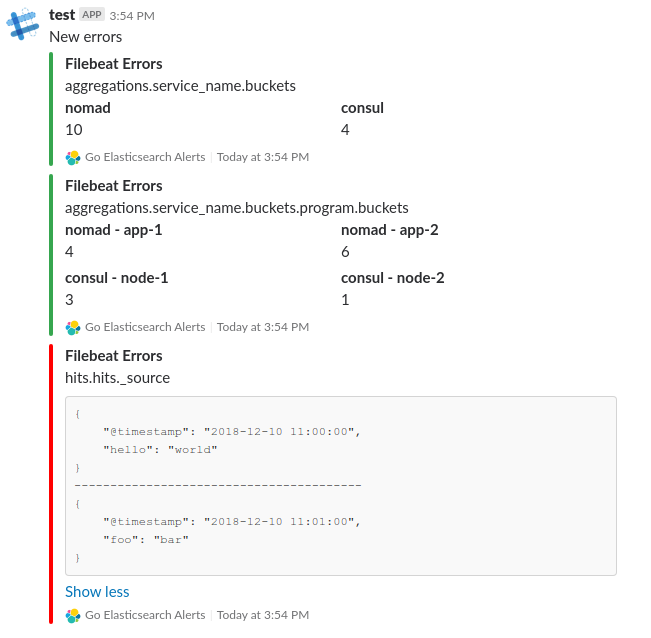

Go Elasticsearch Alerts¶
Release v0.1.76. (Installation)
Go Elasticsearch Alerts lets you create alerts on your Elasticsearch data. To get started, just write a configuration file and a rule and you can receive alerts like the Slack alert shown below when Go Elasticsearch Alerts finds new data matching the rule.

To try it out yourself, check out the demonstration.
The User Guide¶
This part of the documentation, begins with some background information about the Go Elasticsearch Alerts project, then focuses on step-by-step instructions for installing and using it.